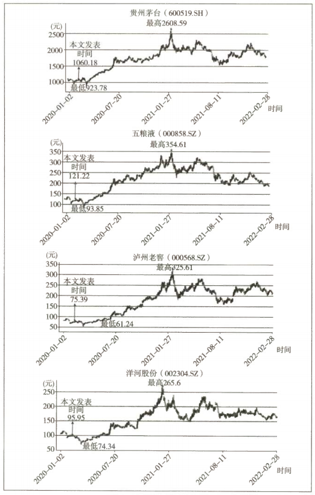

高端白酒产能补充篇
上篇文章发布后，公众号留言区里有几个有趣的问题，可以单独拿出来衍生补充成文。
一、为何在高端白酒产能文章中不谈洋河股份？
1.1 定位：本质是中高端酒
洋河的优势其实不在高端酒领域。洋河在本质上是中高端酒，只是成功地营销了一个高端品牌，让大家以为它和茅台、五粮液、国窖 1573 是一个档次的。
梦之蓝 M9 及以上品质算高端，但由于产能太小，暂时无法取得较大市场份额，对茅台、五粮液、国窖 1573 不构成威胁。
1.2 明清窖池为何不构成优势
洋河也有 2020 口明清窖池：
| 年代 | 窖池数量 |
|---|---|
| 明洪武年间 | 89 口 |
| 明万历年间 | 523 口 |
| 清代（主要为光绪年间） | 1408 口 |
宿迁所在的区域是抗日战争、解放战争拉锯战最惨烈的区域，这些窖池几乎可以断定都中断过酿造。
微生物群逻辑：浓香型的酒窖，其实就是地上挖的一个土坑，作用是将粮食捂在里面发酵。真正起决定作用的，是年复一年的酿造过程中，窖泥、粮食、酒精、水等逐步混合，最终产生和自然留存的有助于发酵的微生物群。
- 窖池是时间这位艺术大师雕琢的艺术品，独一无二，无法严格复制
- 微生物群的数量、种群构成决定浓香酒窖的出酒率及品质
- 一个酒窖如果停止酿造，微生物群的发展和组成会受影响；如果很长时间没有酿造，它和新挖一个土坑的区别就会越来越小
泸州老窖和五粮液等川酒确实在品质和出酒率方面有优势。毕竟地处西南，远离抗日战争及解放战争的主战场，其酿酒过程（或说微生物群体培养过程）没有中断，或中断时期较短。
1.3 产能扩张与放量时点
洋河这几年大力扩张产能和存储能力，相当于正在走五粮液 20 世纪八九十年代走过的路。
| 项目 | 数据 | 老唐的理解 |
|---|---|---|
| 基酒总产能 | 16 万吨 | — |
| 可满足 M9 品质 | 约 5% | 8000 吨可用于 M9 及以上产品 |
| 可满足手工班品质 | 约 2% | 3000 吨可用于手工班 |
| 仅能生产 M9 级别 | — | 8000 − 3000 = 5000 吨 |
放量时点取决于存放期限：M9 基酒究竟需要存放多少年后灌装，现在的口径说 10 年、15 年、20 年的都有，存放期限显著高于五粮液和国窖 1573，估计其中有用存放期限弥补生产品质差异的考虑。
洋河的主要产能扩张在 2013 年完成，据此推算：
| 假设存放期 | M9 具备放量能力的年份 |
|---|---|
| 10 年 | 2023 年以后 |
| 15 年 | 2028 年以后 |
| 20 年 | 2033 年以后 |
究竟哪年现在也不知道（坦率说，估计公司也是看市场情况做调整），我只知道反正存在那儿就跑不了，具体啥时候能卖，等能卖的时候再说吧！
二、泸州老窖的产能计算
评论区里假设各种不同优品率计算老窖产能的朋友不少，但老唐觉得思路都有点儿问题。这个事儿，用芒格老先生"反过来想"的方法会比较简单。
2.1 反推百年以上窖池的优品率
两个不变量：泸州老窖 10086 口老窖池数量一直没有发生变化，每口窖池年产基酒总量约 5 吨也没有发生变化。
结合 2016 年底之前公司宣称"国窖 1573 只能在百年以上窖池里生产，产量共计 3000 吨"，可以反推：
即：百年以上窖池能产出国窖 1573 品质基酒的比例约 37%。
同时假设剩余 63% 的百年以上老窖里面，有 50% 的量足够做特曲级别的酒。
这个 50% 是示意数据，无资料佐证。若调整该假设，后面的计算跟着调整即可。
2.2 基酒与商品酒 1:1.3 的由来
这个比例是老唐自己的理解。浓香酒基酒变商品酒的过程，数量变化主要由加水降度带来——将酒精含量 68% 的基酒，通过加水变成 52% 的商品酒：
即往 100 毫升 68% 的基酒里加入约 30 毫升水。
这只是大概数据，并不准确。
2.3 反推百年以下窖池的特曲优品率
| 推算步骤 | 计算过程 | 结果 |
|---|---|---|
| ① 特曲 2 万吨商品酒需要多少基酒 | 20000 ÷ 1.3 | ≈ 1.54 万吨 |
| ② 百年以上窖池贡献的特曲基酒 | 1619 × 5 × 50% | ≈ 4000 吨 |
| ③ 百年以下窖池需贡献 | 15400 − 4000 | ≈ 1.14 万吨 |
| ④ 百年以下窖池优品率 | 11400 ÷ (8487 × 5) × 100% | ≈ 27% |
原文此处窖池数写作 8487 口，与前文"百年以下窖池 8467 口"略有出入（10086 − 1619 = 8467），不影响约 27% 这一结论的量级。
至于 2017 年到现在，老窖池优品率的提升比例，或者说腾挪特曲基酒产量为国窖 1573 生产服务，这些相关变动和影响，朋友们可以自己提假设、自己计算。
2.4 延伸：为什么主流白酒是 52/53 度
市场上主流白酒度数大部分在 52 度或 53 度，原因据说是这个比例的酒精和水分子结合最紧密。
水分子和酒精分子结合紧密带来三个好处：
| 好处 | 具体表现 |
|---|---|
| 口感好 | 白酒在口腔里比较"规矩"，酒精分子不会乱窜，顺滑、可控 |
| 不易口渴 | 酒精更少地从人体里抢夺水分，饮用后口渴感觉轻微 |
| 易于保存 | 酒精分子更难挥发，能够更好地长期保存 |
加水降度并不是外行人想象的"水龙头一开就可以了"，它的科技含量挺高，技术水平不够，酒很容易变浑浊、变苦。所以不要以为 45 度、42 度、38 度、32 度的酒就差劲，它们只是不太适合长期保存，就饮用来说还是各有特色的。
三、贵州茅台生产基地的问题
3.1 三处生产基地
茅台公司一共有三处生产基地，沿赤水河排开，各自相距二三十公里：
| 基地 | 主要职能 |
|---|---|
| 茅台镇 | 生产茅台酒基酒 |
| 二合镇 | 生产系列酒基酒 |
| 习酒镇 | 生产系列酒基酒（含原习酒公司酱香酒生产线） |
具体如何分布，老唐目前也没有准确掌握。
3.2 茅台酒产品线
茅台酒的基酒在茅台镇生产，主要产品包括：
- 53 度普通茅台系列（大家谈论的一般是"普茅"，分飞天牌和五星牌两种商标，品质一样）
- 43 度低度茅台系列
- 陈年茅台系列（15 年、30 年、50 年、80 年）
- 各种小批量勾调和不同包装的产品
3.3 系列酒："一曲三茅四酱"
| 分类 | 品牌 | 说明 |
|---|---|---|
| 一曲 | 贵州大曲 | 起源于一次失败的实验（详见下文） |
| 三茅 | 赖茅、华茅、王茅 | 复活了新中国成立初期构成茅台酒厂原班底的三家作坊品牌 |
| 四酱 | 汉酱、仁酒、王子、迎宾 | 王子酒是公司仅次于茅台酒的第二大单品，2019 年销售额约 40 亿元 |
茅台王子酒的产能来源：基酒产于习酒镇的原习酒公司酱香酒生产线（和郎酒生产车间隔河相望），这部分产能是茅台股份公司上市之初从习酒公司手中收购的。生产流程和茅台一模一样，只是基酒只存储两年。
3.4 贵州大曲的由来：一次失败实验的产物
| 时间 | 事件 |
|---|---|
| 1958—1963 年 | "大跃进"时期，茅台酒厂探索"人有多大胆、地有多大产"，大力提高产量。结果产量确实上去了，但品质下来了，共产出低品质基酒 1750 吨 |
| 1965 年 | 这 1750 吨酒由仁怀县商业部门以"红粮窖酒"的名义，以 1.4 元/斤 的价格面向社会销售 |
| 此后 | 一些不能满足茅台酒标准的酒，就专门用来做"红粮窖酒" |
| 1976 年 | 改名为"贵州大曲"，留在了老一辈贵州人的味觉和记忆最深处 |
茅台酒有个特色，一直以来顾客不是"上帝"，顾客是"上级"。所以从 1949 年开始的约四十年时间里，普通人一般是喝不到茅台酒的。茅台酒可以不赚钱，可以生产不出来，但绝对不能将不合格的产品装瓶供应给顾客。
这些"红粮窖酒"虽然没达到茅台的标准，但依然远胜于其他白酒，备受贵州人追捧，也成为当地政府机构、企事业单位的职工福利。
四、白酒品质区别问题
4.1 白酒是怎么造出来的
千万别把白酒的生产想复杂了。简单地说，就是将发酵过的粮食放在锅里蒸（记得苹果放久了会有酒味吗）。
| 环节 | 原理 |
|---|---|
| 加热 | 酒精沸点 78 度，低于水的沸点。加热至 78～100 度时，大量富含酒精的蒸汽会出来 |
| 冷凝 | 蒸汽遇到外面的冷凝装置后变成液体，即为基酒 |
| 分类 | 经验丰富的酒师根据流出来的时间、酒花（基酒落入容器时泛起的泡沫）的大小形状，就可以对酒的品质进行初步分类 |
4.2 决定品质的是那不到 2%
白酒的 98% 以上是乙醇和水，这部分都是一样的。决定白酒品质不同、口感不同、体验不同的物质，是只有不到 2% 的其他成分。
这就好像人和猩猩的 DNA 相似度是 98.5% 一样。那些瘪着嘴巴以不屑的口吻说"茅台、二锅头还不都是乙醇+水"的人，其实相当于说"人和猩猩也没啥区别"。
对某些朋友而言，这些可能显得太无趣了——不就炒个股，搞得跟要去开酒厂一样。其实也没说错，在老唐眼里，买股票和开工厂大致就是一码事。
五、补充说明：实盘持仓记录
本文发表时（2020 年 2 月），老唐实盘持有 40% 贵州茅台、12% 洋河股份。此后操作如下：
| 时间 | 操作 | 均价 | 调整后仓位 |
|---|---|---|---|
| 2021 年初 | 贵州茅台减仓 | 约 2366 元 | 3% |
| 2021 年内 | 贵州茅台加仓 | 约 1730 元 | 19% |
| 2021 年内 | 洋河股份加仓 | 约 159 元 | 22% |

图 16-1 贵州茅台、五粮液、泸州老窖、洋河股份股价走势（前复权）